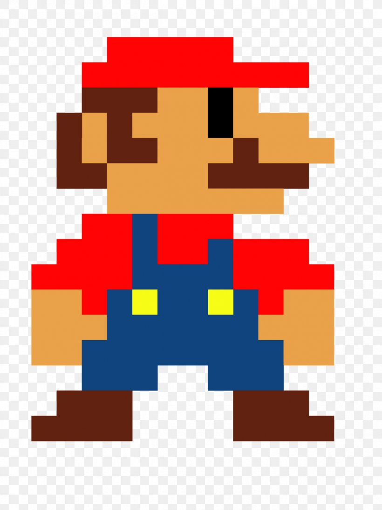
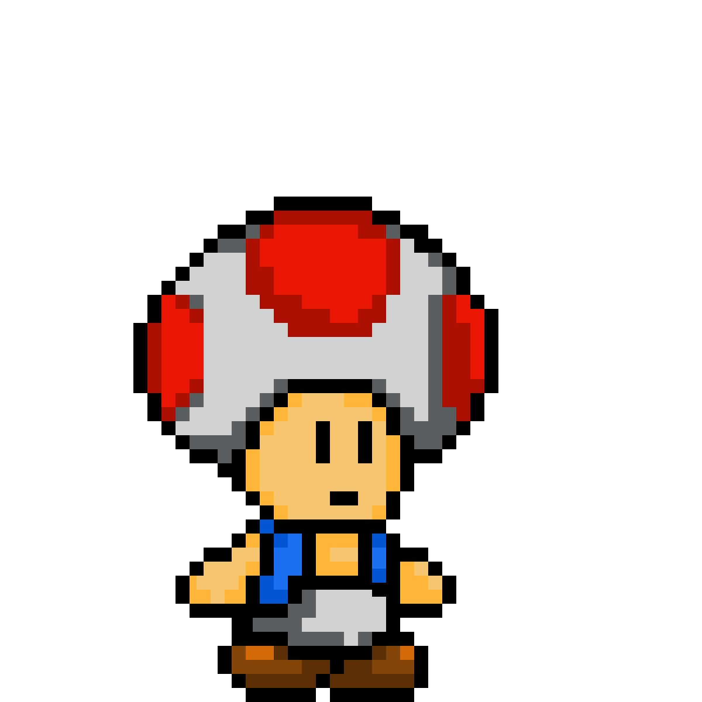

Марио
Луиджи
Принцесса

Гумба
Купа Трупа

Боузер
Тоад
Super Mario Bros(Супербратья Марио) — видеоигра в жанре платформера, разработанная и выпущенная в 1985 году японской компанией Nintendo для платформы Famicom. Занесена в «Книгу рекордов Гиннесса» как самая продаваемая игра в истории. После успеха игры её главный герой, Марио, стал символом компании Nintendo и одним из самых известных игровых персонажей в мире.
Главными героями игры являются водопроводчик Марио и его брат Луиджи (в качестве игрового персонажа для второго игрока). Цель игры — пройти через Грибное королевство, ускользая или уничтожая солдат черепашьего Короля Купы (также известного как Боузер), чтобы спасти захваченную им в плен Принцессу. Марио (или Луиджи) атакует противников, прыгая на них сверху (такой способ убивает грибов Гумба и временно нейтрализует черепах Купа, заставляя их прятаться в свои панцири) или ударяя по платформе, на которой находится противник, снизу. «Испугавшихся» черепах можно использовать как оружие против других врагов, подтолкнув панцирь впереди себя: разогнавшись, он сметает всех на своём пути, но когда встречает преграду, меняет направление и может ударить самого Марио. На некоторых врагов, например дикобразов Спайни, нельзя запрыгивать, так как это ранит Марио. Их можно убить, выстрелив огненными шарами, пнув в них черепаху или ударом по платформе снизу. То же самое касается хищных растений, регулярно показывающихся из торчащих в земле труб. Некоторые из этих труб являются проходом в бонусный уровень, подземелье, в котором можно найти небольшое количество монет, а заодно сократить путь до выхода с уровня. Также встречаются ростки, по которым Марио поднимается на облака, бонусный уровень, на котором большое количество монет и нет противников. Первый уровень «третьего мира». Огненный Марио. По пути Марио собирает монеты и бонусы, ударяя по блокам со знаком вопроса, а также выискивая секретные хранилища монет в кирпичных стенах. При наборе ста монет Марио получает дополнительную «жизнь», изначально у Марио есть три «жизни». За поверженных врагов начисляются очки, которые не приносят какой-либо практической пользы, а служат лишь для отражения мастерства игрока. При наборе 1 миллиона очков шестизначное табло увеличивается до семизначного. При последовательном поражении врагов одним черепашьим панцирем очки начисляются по возрастающей за каждого убитого: от 500 до 8000 очков, а затем (при поражении восьмого персонажа) Марио начисляется дополнительная «жизнь». Среди бонусов может встретиться оранжевый гриб, взяв который, персонаж увеличивается в размерах, превращаясь в Супер Марио (англ. Super Mario). Если взять после этого цветок, то Супер Марио становится Огненным Марио (англ. Fire Mario) и получает возможность стрелять огненными шарами, то есть поражать противника на расстоянии. Если Супер Марио или Огненный Марио дотрагиваются до противника, то они возвращаются в стадию обычного Марио. Если же противник ранит Марио или кончается время, выделенное для прохождения уровня, то игрок теряет одну «жизнь» и игра начинается заново (либо с начала уровня, либо с его середины). В уровнях, которые расположены в за́мках, погибший Марио начинает игру всегда с начала уровня. Ещё один встречающийся в игре бонус — звезда. Она не «вырастает» из блока, как гриб, а выскакивает из него и начинает перемещаться по синусоидальной траектории вперёд по направлению движения. Заполучив её, Марио становится на некоторое время неуязвимым для врагов: противники погибают от одного его прикосновения. На некоторых уровнях встречаются также бонусы в виде зелёного гриба «1-up», который добавляет Марио одну «жизнь».Игра состоит из восьми миров по четыре уровня в каждом. В конце каждого четвёртого уровня, на мосту через озеро с лавой, Марио встречается с Королём Купой (англ. King Koopa) — огромным черепаховидным драконом. Король Купа дышит огнём, а начиная с шестого мира — ещё и метает огромные молоты. Победить Купу можно двумя способами: дотронуться до топора, находящегося за Купой (тот перерубит трос и Король Купа упадёт в лаву), либо поразить короля Купу с безопасного расстояния огненными шарами. В случае победы над Купой в первых семи мирах с помощью огня, выясняется, что это на самом деле переодетый простой враг, как черепаха, Гумба и т. д. После этого Марио встречает Тоада — жителя Грибного королевства, который говорит ему: «Thank you Mario! But our princess is in another castle!» (рус. Спасибо, Марио, но наша принцесса в другом замке!) В игре существуют три секретных перехода, называемые Зоной Искривления (англ. Warp Zone) и позволяющих быстро переместиться в другие миры. При попадании в секретную комнату на экране появляется надпись «Welcome to warp zone!» (рус. Добро пожаловать в зону искривления!) и номера миров, в которые можно перенестись. Также на некоторых уровнях в за́мках имеются ловушки — постоянно повторяющиеся комнаты, которые необходимо проходить в определённом порядке. После того, как игрок пройдёт последний уровень восьмого мира, он получит возможность начать игру в более сложном режиме (англ. Second quest — второе задание). Отличия от основного задания: Все противники передвигаются с большей скоростью; Все грибы Гумба заменяются на жуков Баззи; Все платформы-лифты уменьшаются в размерах; Регенерация оглушённых врагов происходит быстрее; Огненные стержни появляются во всех отведённых местах, и в некоторых случаях становятся длиннее; Некоторые карты усложнены (например ядрами, появляющимися справа); В некоторых случаях, большая численность врагов (водоём, рыбки Чипы); Более редки контрольные пункты (check-point) в середине уровня.